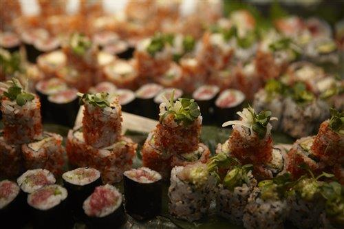
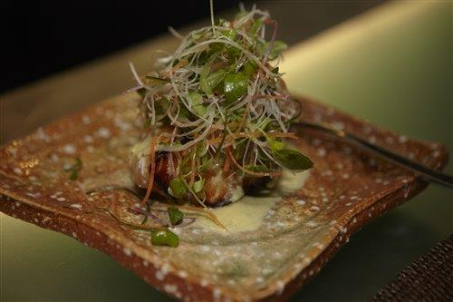

Hyrkock.se
Välkommen till våra stora ljusa lokaler med "New York" känsla.
Hyrkock.se är platsen för just Er! Här möter ni era kunder i en avslappnad miljö, umgås med kollegor eller bara njuter av mat och dryck.
Hyrkock.se är en perfekt aktivitet för representation, kickoff, möhippa/svensexa eller goda vänner.
Ni väljer om ni vill vara med och laga en meny ihop med en av våra professionella kockar eller om ni vill bli serverade som en egen privat restaurang.
Vi använder närproducerade råvaror anpassade efter årstiden och skräddarsyr en smakupplevelse efter just era behov.

Välkommen
Menyer
950;-
3 rätters meny
1095;-
4 rätters meny
1295;-
6 rätters meny
Välj om ni aktivt vill vara med och laga maten eller bara äta och bli serverad
450:- 650:- 950:-
Vinpaket 3 rätters meny
550;-
Dryckespaket 4 rätters meny
650;-
Dryckespaket 6 rätters meny
- Egen kock
- Eget kök
- Egen matsal
- Mousserande fördrink
- Öl/Vin/Alkoholfritt under matlagningen
- Presentförkläde
Kompletera gärna med någon av våra dryckesprovningar eller ha en egen barskola
Vinprovning:
Vi provar 5 olika sorters vin
Champagneprovning:
Vi provar 5 olika mouserande / champagnesorter
Mat och vin i kombination:
Vi experimenterar med olika smaker
Barskola:
Vi gör 4 olika drinkar / cocktails under ledning av vår bartender
Thomas Östberg 0734 - 38 48 28 info@stockholmsmatstudio.se
Visa karta